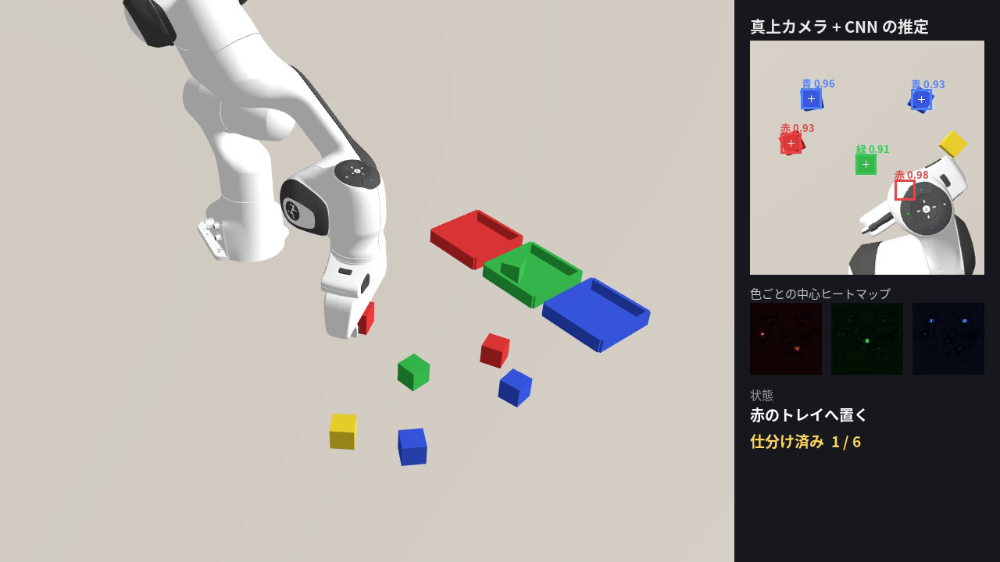
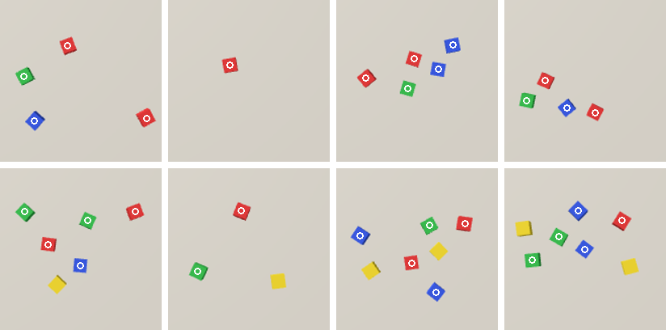

| 動画 | （YouTube の URL を記入） |
|---|---|
| コード | https://github.com/ttnyt8701/genesis-vision-sorter |
| 環境 | Genesis 1.4.5（CPU バックエンド）、Franka Panda、PyTorch（CPU） |
机の上に散らばった赤・緑・青のブロックを、ロボットアームが同じ色のトレイへ仕分けるタスクを作った。 ブロックの位置と向きは毎回ランダムで、ロボットは真上のカメラ画像だけを手がかりに動く。 黄色のブロックは「仕分け対象ではない物」として混ぜてあり、これには触らずに残すことも条件にした。
物流倉庫のピッキングや、工場で部品を種類ごとに分ける作業を小さく再現したものである。 講義で扱ったシミュレータ上で、認識（AI）と制御をつないで一連の作業を完結させることを目的とした。

処理は次のループで進む。
1 個運ぶたびに撮り直すので、途中でブロックが動いても次の撮影で位置が更新される。 動画の 2 本目では、仕分けの途中でブロックを 1 つ別の場所へ動かしても、そのまま追従できることを示している。
CenterNet の考え方を参考に、7 層の小さな畳み込みネットワーク（CubeNet、パラメータ約 14 万）を作った。 入力の 1/4 の解像度のマップで、色ごとの中心ヒートマップ（3 チャンネル）、中心のサブピクセルのずれ（2）、向き（2）を出力する。 立方体は 90° 回すと同じ形になるので、向きは角度 θ ではなく (cos 4θ, sin 4θ) で表し、0° と 90° が同じ値になるようにした。 ヒートマップは focal loss、ずれと向きは中心の画素だけで L1 損失をとって学習した。

学習データは手作業で用意せず、Genesis 上で自動生成した。 各色 0〜2 個のブロックと 0〜2 個の黄色ブロックをランダムな位置・向きで置き、真上カメラで撮影する。 正解はブロック上面の中心をカメラ行列で投影して求めるので、ラベル付けの手間はかからない。 実機でのカメラの取り付け誤差を想定し、撮影ごとにカメラの位置と注視点を 1〜2cm ほどずらした。 4000 枚を約 7 分で作り、学習時には反転・90° 回転・明るさ・色味・ノイズの変化で水増しした。 学習は CPU（4 コア）で 18 エポック、約 10 分である。
別のシードで作った検証画像 500 枚（ブロック 1512 個）で評価した。 中心が 4 画素以内で色も合っていれば正解とした。 比較のため、RGB のしきい値と連結成分で検出するルールベースの方法も作り、標準の照明で正しく動くようにしきい値を調整した。 さらに、照明やカメラの状態が変わった場合を想定して、画像を暗く・明るくする、ノイズを足す、色味をずらすといった加工をして同じ評価を行った。
| 画像の条件 | CNN 再現率 | CNN 中心誤差 | 色しきい値 再現率 |
|---|---|---|---|
| 標準 | 100.0% | 0.32 px | 100.0% |
| 暗い (x0.6) | 100.0% | 0.33 px | 0.0% |
| 明るい (x1.3+20) | 100.0% | 0.39 px | 48.7% |
| ノイズ (σ=15) | 100.0% | 0.35 px | 100.0% |
| 色かぶり (青み) | 100.0% | 0.39 px | 100.0% |
標準の照明では色しきい値でも 100% 検出でき、CNN を使う必要はなかった。 差が出たのは明るさが変わったときで、暗くすると色しきい値は 1 個も検出できず、明るくすると半分以下になった。 CNN は学習時の水増しだけでどの条件でも全て検出でき、中心の誤差は 0.3〜0.4 画素（床面で約 1mm）、向きの誤差は平均 0.4° だった。
正解の座標は一切使わず、CNN の推定だけで最後まで仕分けた。 ランダム配置 20 回（ブロック計 86 個）で、86 個すべてが正しい色のトレイに入った。 取り損ねてやり直すこともなかった。 一方で、1 回だけ近くにあった黄色ブロックにアームが当たり、1cm 以上ずらしてしまった。 仕分け自体には影響しないが、対象外の物に触れないという条件は完全には守れていない。
今回はすべてシミュレーションで、照明の変化も画像の加工で代用している。 本物のカメラ画像では影や反射、背景の違いがあるので、シミュレータのテクスチャや照明もランダムに変えて学習する（ドメインランダマイゼーション）か、少量の実画像で追加学習する必要がある。 また、物体は立方体だけで、ブロック同士が接していたり重なっていたりする配置は扱っていない。 黄色ブロックに当たった件は、経路を決めるときに周りの物体との距離を考えれば防げると考えている。 今後は、言葉で「赤だけ集めて」のように指示を出せるようにすることや、SO-101 などの実機で同じ流れを試すことに取り組みたい。